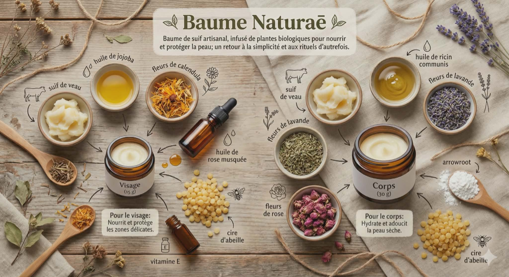

Baumes à lèvres
Enrichi d’huile et de beurres nourrissants pour protéger et adoucir les lèvres naturellement.
Le Naturel
Un baume minimaliste pour un soin quotidien.
Menthe
Une touche rafraîchissante de menthe pour éveiller les sens.
Baume Naturaē
Baume de suif artisanal, infusé de plantes biologiques pour nourrir et protéger la peau; un retour à la simplicité et aux rituels d’autrefois.

Baume pour Visage (15 g)
Ingrédients: suif de veau, huile de jojoba, fleurs de calendula, huile de rose musquée, cire d’abeille, vitamine E
Baume pour le Corps (30 g)
Ingrédients: suif de veau, huile de ricin communis, fleurs de lavande, fleurs de rose, cire d’abeille, arrowroot
Rituel d'application
Prélevez une petite quantité (de la taille d’un petit pois), laissez-la fondre entre vos doigts, puis massez délicatement sur une peau légèrement humide ou fraîchement nettoyée. Intégrez-le dans votre routine quotidienne après votre eau florale et/ou votre sérum pour sceller l’hydratation.
- Comme hydratant au quotidien
- Comme baume nourrissant de nuit
- Comme voile protecteur le jour (ex. : activités extérieures hivernales)
- Ou en soin ciblé sur les zones sèches
Note: La peau peut vivre une courte période d’adaptation. De petites irrégularités sont normales durant les premiers jours.
Tisanes
Offrez-vous un moment cette saison. Laissez la chaleur et la sérénité remplir votre tasse.
Le Nocturne
Conçue pour calmer l’esprit et libérer les tensions, cette tisane aide à retrouver un sommeil réparateur.
Notes: Florale et herbacée, touche épicée.
Ingrédients: mélisse, basilic sacré, lavande, racine de valériane, ashwagandha
Aurora
Infusion botanique qui favorise la détoxification naturelle et la vitalité.
Notes: Onctueuse et réconfortante, finale vivifiante.
Ingrédients: rooibos, racine de pissenlits, écorces d’orange, basilic sacré, lavande
Rituel: Infuser 1 à 2 c. à thé dans l’eau chaude pendant 5 à 7 minutes.
Mise en garde
Les produits Essence Naturaē sont fabriqués à la main avec des ingrédients naturels. Nous recommandons de faire un test préalable sur une petite région de la peau. Cessez immédiatement l’utilisation en cas d’irritation. Évitez le contact direct avec les yeux.